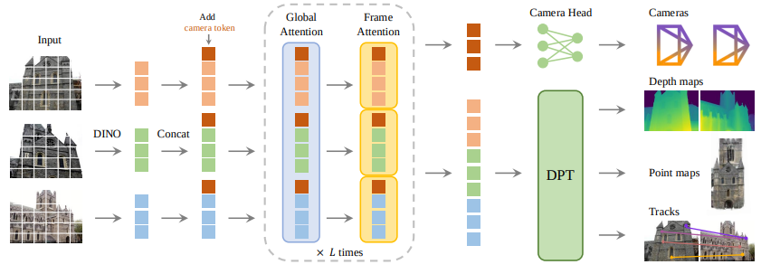

VGGT: Visual Geometry Grounded Transformer
Introduction
3D reconstruction has always been one of the most interesting problems of 3D computer vision. The methodology until now had relied on Structure from Motion (SfM) and Multi View Sterio (MVS). These methodologies rely more on post processing algorithms and can only process 2 frames at a time.
VGGT (Visual Geometry Grounded Transformer) by Meta utilizes a large feed-forward transformer to infer all key 3D attributes directly from images. This eliminates the need for post-processing, making VGGT highly efficient while achieving state-of-the-art results in tasks like camera pose estimation, camera parameter estimation, multi-view depth estimation, dense point cloud reconstruction, and 3D point tracking.
Model Architecture

PROBLEM DEFINITION
VGGT is a large feed-forward transformer designed to generate 3D scenes from 2D images. The model takes in N RGB images and predicts the 3D representation of the scene.
The problem definition can be formulated as
$$f((I_i)^N_{i=1}) = (g_i, D_i, P_i, T_i)_{i=1}^{N}$$
where:
$g_i$ = Camera Parameters
$D_i$ = depth map
$P_i$ = point map
$T_i$ = dense features extracted
All predictions are with respect to the coordinate frame of the 1st camera.
Here, $g_i$ can be defined as $g = [q,t,f]$ where $q$ is the rotation quaternion, $t$ is the translation vector and the field of view $f$.
The depth map is $D_i$ associates every pixel in the 2D image with the corresponding depth values as observed from the $i$th camera.
The point map $P_i$ associates each pixel with its corresponding 3D scene point.
The network uses an any keypoints selection method. So therefore, for any query image $I_q$ the network will give out a track that is formed by the corresponding 2D points $y_i$ in all the images $I_i$
$\mathcal{T}((y_q) = y^N_{i=1}$
Here the transformer doesnt output the tracks directly but the features $T_i$ that are used for tracking. The tracking is delegated to a separate function in the prediction head that takes in the the query points $y_q$ and dense tracking features $T_i$ from the transformer and compute the tracks. Both the networks the transformer and tracking from th prediction head are trained jointly end to end.
One the interesting observations from the paper includes that even if the depth map can be deduced from the camera parameters and the point map, tasking the VGGT to predict these quantities during training increases the accuracy of the predictions. And during inference the prediction of these quantities allow for a more accurate point cloud as compared to using a separate point cloud branch.
FEATURE BACKBONE
The model implemented in the VGGT is a large transformer. Every input image is patchified to a set of $K$ tokens. All the tokens from $N$ frames are then processed through the main network, alternating framewise attention and global self attention.
Alternating Attention
Alternating Attention consists of 2 main parts:
- Frame wise Self Attention: Computes the self attention of every token with respect to itself ie. in its own feature space. This allows the network to capture local spatial relationships for each frame.
- Global Self Attention: This block computes the inter frame relation by combining and refining features across views. This allows the model to understand relations across multiple views/frames allowing for a better point cloud generation and camera pose estimation.
The alternating attention is the alternative arrangement of these blocks. The VGGT employs 24 layers of global and frame wise attention
PREDICTION HEADS
Overall the model works by taking in an input image $I_i$ and then create the corresponding image tokens. An extra camera token $t_i^g$ is also added to the image tokens along with 4 register tokens $t_i^R$. Therefore the concatenation of $(t_i^I, t_i^g, t_i^Rj)^N_{i=1}$ is passed to the transformer.
Here the camera and register token from the 1st frame are set to a different learnable token in order to distinguish them from the rest since the frames rendered are in the frame of a the 1st camera. The output register token is then discarded while the camera and image tokens are used for prediction.
For making the predicting the point clouds from the coordinate frame of the 1st camera are set to an identity matrix. The rotation quaternion and translation vector matrix is set to $[0,0,0,1]$ and $[0,0,0]$ respectively. This is possible due to the initial separation of the camera tokens of 1st camera.
Camera Predictions
The model predicts the camera intrinsic and extrinsic parameters from the camera tokens using 4 additional self attention layers and a linear layer at the end.
Dense Predictions The output image token is used to predict the depth maps, point maps and the tracking features. The output image tokens are passed to the DPT layer to be converted to Dense Feature Map $F_i$. The $F_i$ is then passed to a 3x3 convolution layer to get the corresponding depth maps $D_i$ and point maps $P_i$. Additionally the dense features outputted by the DPT layer is used for tracking.

Note here that the aleatoric uncertainty is also predicted along with the depth maps and point clouds. Aleatoric uncertainty depicts the inherent uncertainty/ randomness in the prediction.
Tracking